This is a personal project I took on, where I choose a system I was innately familiar with, conducted a survey, performed an audit and performed a competitive analysis of other similar systems. In conclusion, based on my research, created a whole new flow.
MARTA stands for Metropolitan Atlanta Rapid Transit Authority. MARTA is Atlanta’s main transit system.
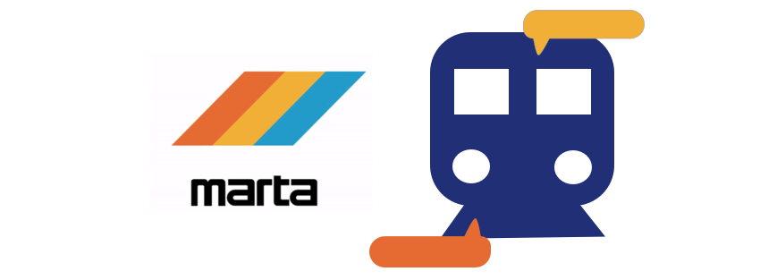
If you are regular MARTA user, you would purchase a breeze card and reload your breeze card with a MARTA kiosk. The breeze card grants access to the ...
Because of all the access the MARTA card has - the kiosk has a lot of rules and flows.
The MARTA kiosk flow has remained unchanged for years. In Atlanta, this system touches millions of workers' ability to get to their jobs and homes. Improving the flow of this system can decrease queue time, and can prevent users from interacting with other modes of transportation. If so, the government will loose points of sale and carbon will be added to the environment due to an increase in car usage. If we can improve this flow, we can bring more users to the machine, more users to the MARTA, less cars on the road and more government revenue.
Considering the use of the machine, we know users are most likely in a rush to get to their location. Keeping that in mind when decreasing the flow, and prioritizing those who use it most can mitigate that pain of using the machine.
While designing this system I kept in mind two of my biggest limitations, the physical buttons and the various access options the breeze card gave.
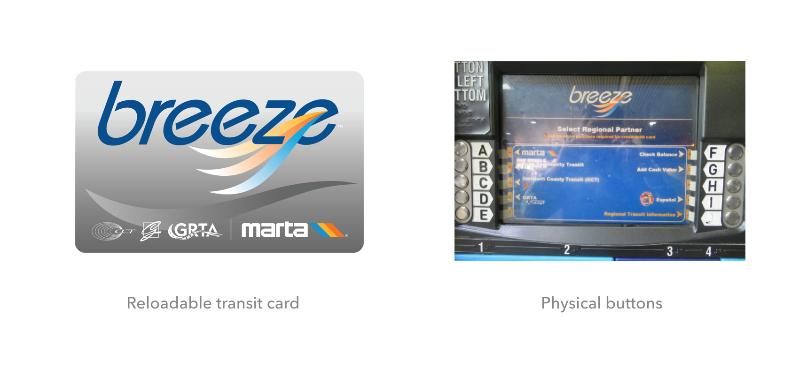
Due to the fact that there are so many opportunities for your breeze card, the kiosk can be overwhelming. Not only are there too many options, but there is no priority for commonly used user actions , such as those who own a breeze card.
Because the physical buttons were placed evenly on the screen and all equidistant from one other, I had no free choice over where to place the options.
I created a short 10 question survey about users’ experience with the MARTA system. The questions were mulitple choice and a couple free anwser. I posted the survey on my facebook wall to get results from my communtity. From that survey I got 34 response and most of the responses were 18-35 years old.
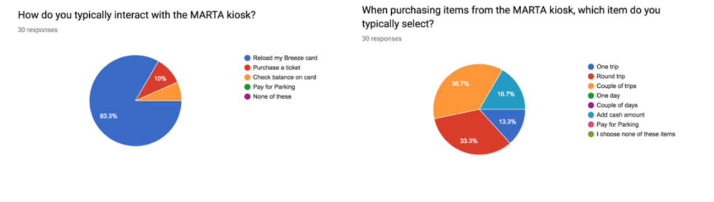
In short, the results are
These results tell me what users 18-35 years old thought about the MARTA system. I know from this data 93% users use trains, that means I should prioritize the trains on this platform, as oppose to buses. I also know most users use the machine to reload their card, as opposing to buying a ticket or buying a card, so prioritizing those with a card. I also see from this data that most users buy a single or round trip as oppose to mass loading money on their card, from that I am making sure I provide those options.
Looking at these survey results, I considered that most of my facebook friends were from a different socio-economic background than those who normally use MARTA. I researched what differences MARTA put into their flow to account for that. MARTA has discounted prices on bulk money refills on the card so providing an easy option to customize price was included in this. I also discovered that many people switch between trains, so loading a lot of money on their card is the easiest way to pay for that. Keeping that in mind I included a "Same-Day Transfer" option, to reduce the flow for those who do that.
Screens - this indicates how many screens the user had to interact with to purchase a round trip.
Physical Interactions - Physical Interactions indicate how many times the user had to either swipe a card, press a button or interact with the keypad.
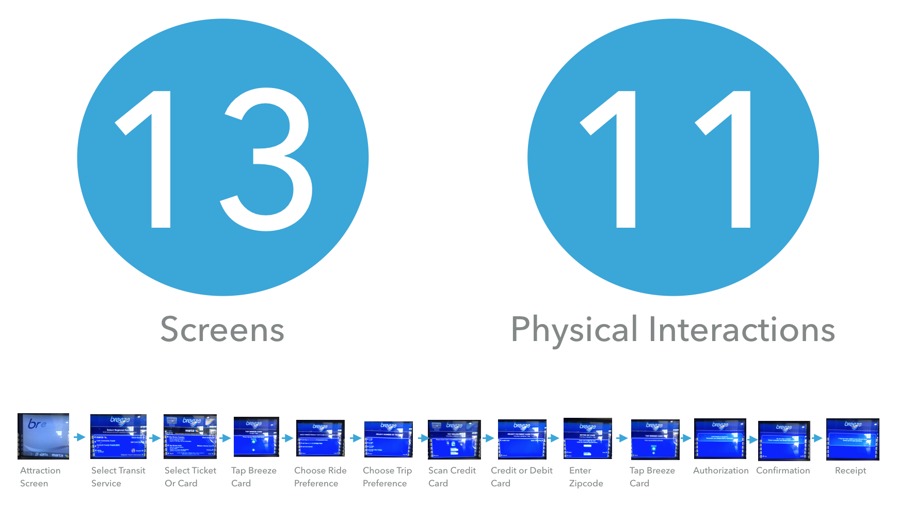
A MARTA rider, in order to purchase 2 trips ( otherwise known as a round trip and a basic purchase from the kiosk) has to go through 13 screens, and interact with the machine 11 times.
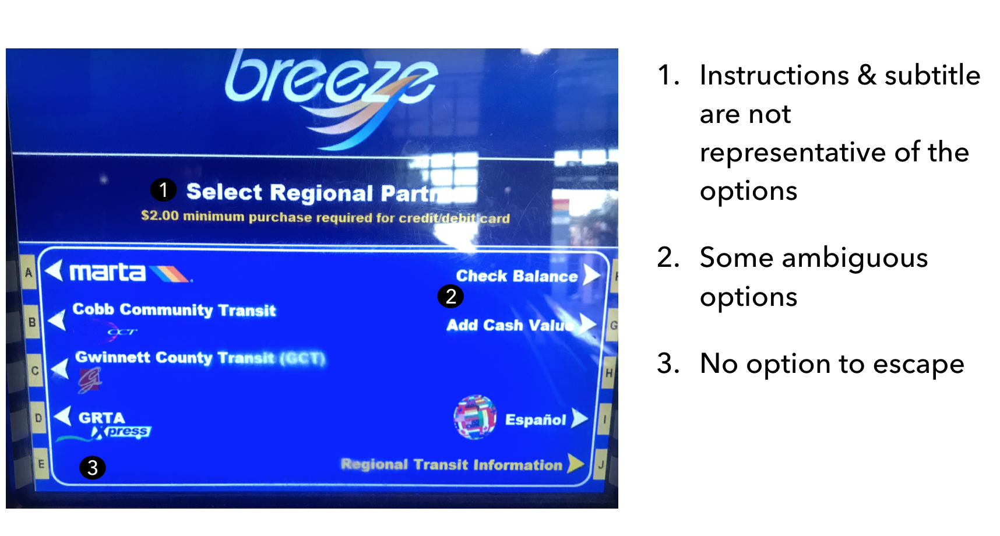
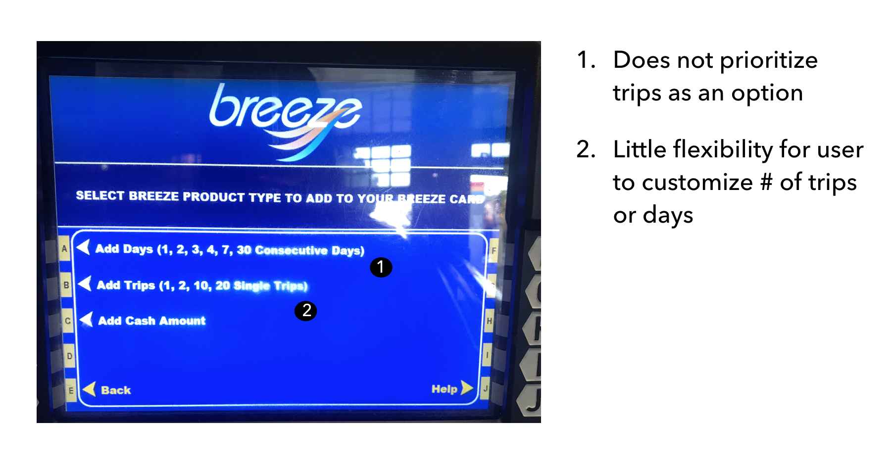
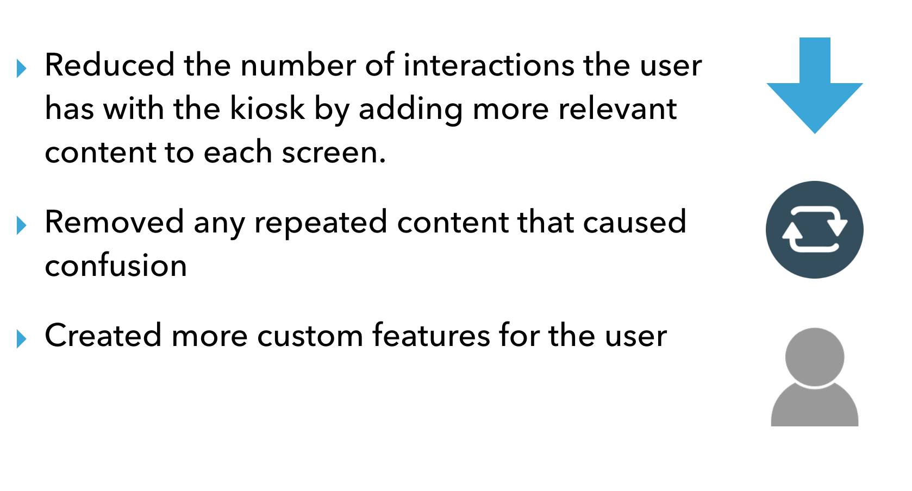
A MARTA rider, in order to purchase a standard trip in my new redesign has to go through 9 screens, and interact with the machine 7 times.
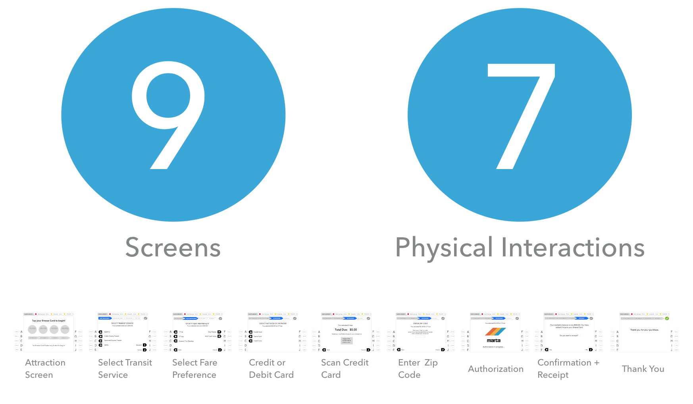
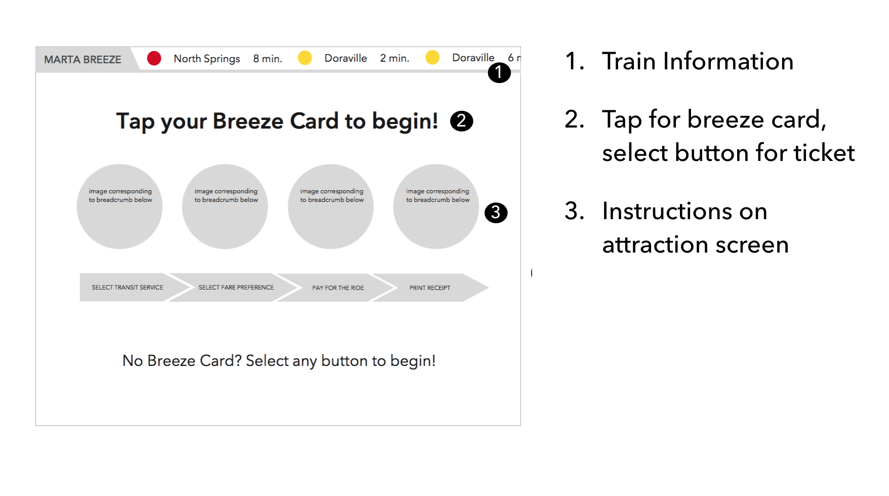
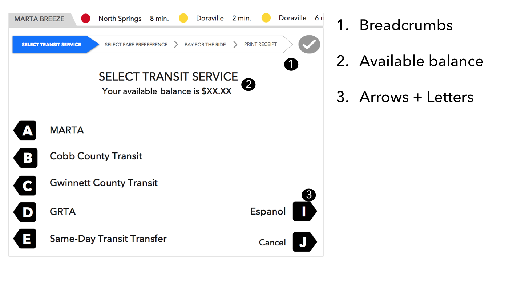
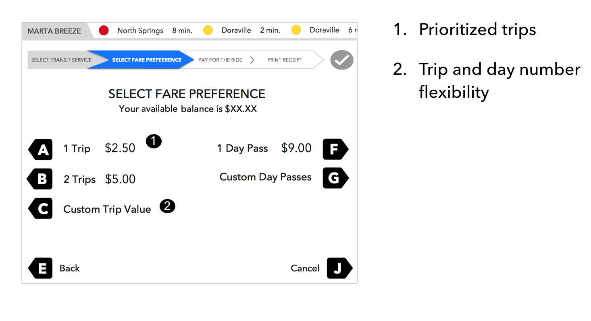
The potential Impact of this flow could decrease service time per customer, decrease queue time overall and increase usability. All three of these aspects will lead to a happier user.